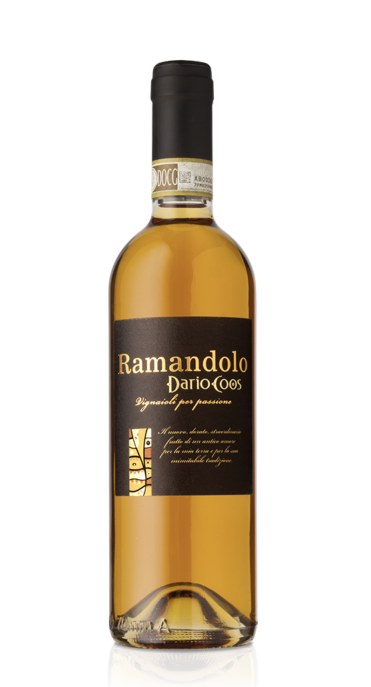
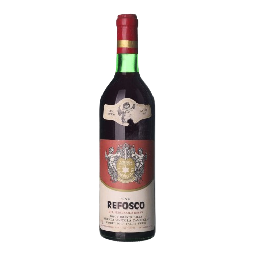
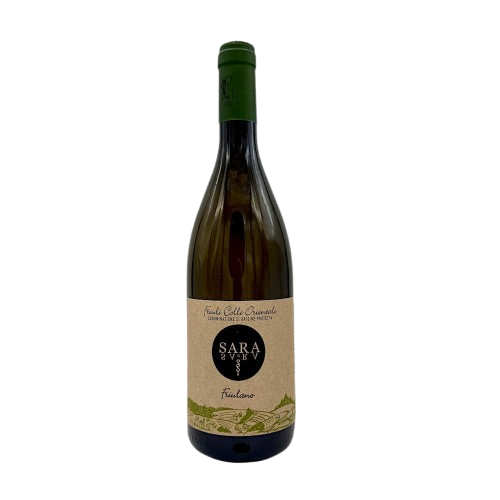

I Colli Orientali del Friuli sono una storica area vitivinicola della provincia di Udine, riconosciuta come DOC dal 1970, nota per terreni di marne e arenarie definiti “ponca” e per la produzione di vini bianchi e rossi da vitigni autoctoni e internazionali.
Zona Nord
Clima: Più fresco e ventilato, protetto a ridosso delle Prealpi Giulie.
Caratteristica: Forte escursione termica tra giorno e notte, che dona ai vini aromi intensi ed elevata freschezza.
Vini tipici

Ramandolo (DOCG)
Vino dorato dolce da uve Verduzzo Friulano; profumi di miele, albicocca secca e un finale tipicamente tannico e asciutto.

Refosco di Faedis
Rosso autoctono antico e vibrante, noto per la spiccata acidità, note di frutti di bosco scuri e sentori selvatici.
Zona Centro
Clima: Mite e collinare, con suoli molto ricchi di ponca profonda (*flysch*).
Caratteristica: Cuore storico della DOC: terreni perfetti per estrarre mineralità, sapidità e speziature uniche.
Vini tipici

Schioppettino di Prepotto
Rosso aristocratico e inconfondibile, celebre per la freschezza e l'intensa nota speziata di pepe verde in grani.

Friulano
Il grande bianco della tradizione: minerale, strutturato, floreale, con il tipico e piacevole finale di mandorla amara.
Zona Sud
Clima: Rilievi più dolci, caldi e accarezzati dalle brezze marine dell'Adriatico.
Caratteristica: Temperature più miti che favoriscono ottime maturazioni zuccherine, eleganza e vini longevi.
Comuni principali: Corno di Rosazzo, Buttrio, Manzano, Premariacco.
Vini tipici

Picolit (DOCG)
Rarissimo vino da meditazione ottenuto da acinellatura naturale; morbido, regale, con aromi di pesca sciroppata e acacia.

Rosazzo (DOCG)
Grande bianco da uvaggio guidato da uve autoctone; solenne, caldo, longevo e di straordinaria ampiezza gusto-olfattiva.

Cenni Storici

La viticoltura nei Colli Orientali affonda le sue radici nell'epoca romana, quando la vicina Aquileia era uno dei porti e centri di commercio più importanti dell'Impero.
Nel Medioevo furono soprattutto i monaci benedettini e l'influenza della Repubblica di Venezia a perfezionare la coltivazione della vite, selezionando i vitigni che oggi consideriamo storici e autoctoni.
Oggi questa tradizione secolare continua a vivere grazie a generazioni di vignaioli che preservano l'identità del territorio e valorizzano il suolo unico della nostra terra.